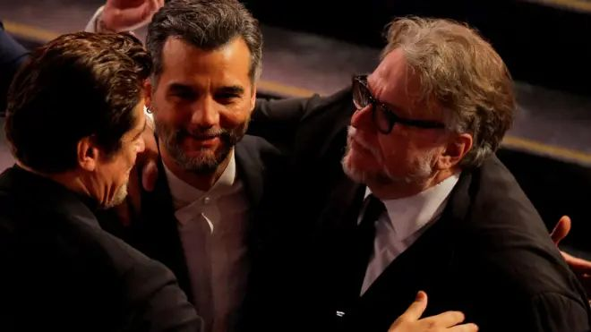

Jeffrey Epstein funded Brazilian models and warned days before his arrest
Jeffrey Epstein financiou modelos brasileiras e avisou dias antes sobre sua prisão
Messages show payments to Brazilian models
Mensagens mostram pagamentos de Epstein a brasileiras

The millions of new documents about convicted sex offender Jeffrey Epstein released by the U.S. government in recent weeks show that he maintained personal relationships with Brazilian models, provided them with financial support, and may have employed some of them as assistants at some point.
Os milhões de novos documentos sobre o criminoso sexual condenado Jeffrey Epstein divulgados pelo governo americano nas últimas semanas mostram que ele manteve relações pessoais com modelos brasileiras, ajudou-as financeiramente e até pode tê-las empregado em algum momento como assistentes.
There are conversations dating back to at least 2006 in the archives, before his first arrest. In these conversations, maintained by email, he is invited to parties, discusses visits to São Paulo, mentions sending money, asks to be introduced to other women for when he travels to Brazil, receives photos of women (ages are not mentioned), and even warns one of them just days before his first arrest in 2008.
Há conversas datadas pelo menos desde 2006 nos arquivos, antes de ele ter sido preso pela primeira vez. Nessas conversas, mantidas por e-mail, ele é convidado para festas, fala de visitas a São Paulo, diz que vai mandar dinheiro, pede para que apresentem outras mulheres para quando fosse viajar ao Brasil, recebe fotos de mulheres (idades não são mencionadas) e até avisa a uma delas poucos dias antes de ser preso pela primeira vez, em 2008.
Because the context of the emails is limited and there is no clarity about illegal actions, all names will be preserved in this text. Some of these files have been removed from circulation by the U.S. government in recent days after victim identification.
Como o contexto dos e-mails é limitado e não há clareza sobre ações ilegais, todos os nomes serão preservados neste texto. Parte desses arquivos foi tirada do ar pelo governo americano nos últimos dias, após identificação de vítimas.
Federal prosecution service opens investigation in natal
Denúncia ao ministério público federal

One of these messages involving a Brazilian woman came to the attention of the Federal Prosecution Service (MPF) in Natal, Rio Grande do Norte, last week.
Uma dessas mensagens envolvendo uma brasileira chegou ao conhecimento do Ministério Público Federal (MPF) em Natal, no Rio Grande do Norte, na última semana.
An internal exchange of official communications began after the chief prosecutor Gilberto Barroso de Carvalho Júnior reported having received information "regarding the recruitment and sending of a woman residing in the Natal/RN area possibly for the practice of sexual acts with Jeffrey Epstein in the USA."
Uma troca interna de ofícios teve início depois de o procurador-chefe Gilberto Barroso de Carvalho Júnior comunicar ter recebido informações "dando conta do aliciamento e envio de mulher residente nos arredores de Natal/RN possivelmente para a prática de atos sexuais com a pessoa de Jeffrey Epstein, nos EUA".
Last week, journalists and websites in the state reported that there were mentions of a woman from Natal in email exchanges. Dated 2011, the messages obtained by BBC News Brasil do not confirm whether there was recruitment, nor do they reveal the age of the person mentioned. But they show Epstein's interest in a Brazilian woman after she was introduced by an acquaintance. They also show that this intermediary in Brazil attempted to introduce him to other friends.
Na última semana, jornalistas e sites no Estado noticiaram que havia menções a uma mulher de Natal nas trocas de emails. Datadas de 2011, as mensagens, obtidas pela BBC News Brasil, não confirmam se houve aliciamento, nem revelam a idade da pessoa citada. Mas mostram o interesse de Epstein em uma brasileira após ela ser apresentada por uma conhecida. Mostram também que esta ponte no Brasil também tentou apresentá-lo a outras amigas.
The dialogues detail the organization for passport issuance, the plan to bring her to the USA, and Epstein's explicit requests for photos in swimwear and lingerie. The case was forwarded to the National Unit for Combating International Human Trafficking and Immigrant Smuggling.
Os diálogos detalham a organização para a emissão de passaporte, o plano de levá-la aos EUA e pedidos explícitos de Epstein por fotos em trajes de banho e lingerie. O caso foi encaminhado à Unidade Nacional de Enfrentamento ao Tráfico Internacional de pessoas e ao Contrabando de Imigrantes.
Timeline of events and contacts
Cronologia dos eventos e contatos

'boss'
'patrão'

The first messages are exchanged in 2006. Epstein asks a model if he can meet another woman and asks her to call him in New York on Sunday.
As primeiras mensagens são trocadas em 2006. Epstein pergunta a uma modelo se pode se encontrar com outra mulher e pede que ela ligue para ele em Nova York no domingo.
In one email, the Brazilian woman says she has something for him. Epstein responds: "I'm waiting for a photo." In December, he announces he will be in São Paulo and asks: "Princess, where are you? I'll be in São Paulo this week. Who is there?"
Em uma mensagem anterior, a interlocutora brasileira diz que "tem algo" para ele. Epstein responde: "Estou esperando por foto." Em dezembro, ele avisa que estaria em São Paulo e pergunta "Princesa, onde você está? Estarei em São Paulo nesta semana. Quem está lá?"
The woman, who in one of the emails calls him "patrão" (Portuguese for "boss"), asks Epstein for information about operating a large women's lingerie company abroad. She mentions that her boyfriend has interest in investing in the brand.
A mulher, que em um dos e-mails o chama de "patrão" (em português), pede a Epstein informações sobre a operação de uma grande empresa de lingerie feminina no exterior e diz que seu namorado tem interesse em investir na marca.
She also asks him if a friend can stay at his New York house and if he can help with her flight. He responds: "Do I know her?" In at least one 2008 email in which Epstein is copied, there is the title "Save the Date" with names and emails of several Brazilian models and fashion industry businesspeople.
Ela também pergunta a ele se uma amiga pode ficar na casa dele em Nova York e se ele pode ajudar com sua passagem, ao que ele respondeu: "Eu a conheço?" Em ao menos um dos e-mails em que Epstein é copiado, de 2008, há o título "Save the Date", com nomes e emails de diversas modelos brasileiras e empresários do setor da moda.
The conversations end with Epstein saying he "will go to jail for a year, starting on Monday. Good luck to you." This last message was sent on June 28, 2008. On June 30, he would plead guilty to charges of soliciting underage prostitutes and was sentenced to serve time.
As conversas terminam com Epstein dizendo que "vai para a cadeia por um ano, começando na segunda." Esta última mensagem foi enviada em 28 de junho de 2008. No dia 30, ele se declararia culpado de acusações de ter solicitado prostitutas menores de idade.
'can i send you money?'
'posso te mandar dinheiro?'
Throughout 2012, Epstein exchanges a series of messages with another Brazilian model. The messages suggest that they maintained some kind of personal relationship and that Epstein provided her with regular financial support.
Ao longo de 2012, Epstein troca uma série de mensagens com outra modelo brasileira. As mensagens dão a entender que eles mantinham algum tipo de relacionamento e que Epstein a ajudava com dinheiro.
In July, more thanks messages. "I miss you very much, thank you for everything, for always being near me. You are the best. Don't forget that you live in my heart."
Em julho, novos agradecimentos. "Sinto muito sua falta, obrigada por tudo, por sempre estar perto de mim. Você é o melhor. Não se esqueça de que você vive no meu coração."
Epstein asks her if "she can go to the island after the 1st" and offers an airplane to pick her up. In February, he says he wants to send money to her: "Do you have a bank account where I can send you money?" to which she responds with information from a Brazilian bank.
Epstein pergunta a ela se "ela pode ir à ilha depois do dia 1" e oferece um avião para buscá-la. Em fevereiro, ele diz que quer mandar dinheiro para ela e que não gosta de que "ela não tenha nada". "Você tem alguma conta bancária em que eu possa mandar dinheiro?", ao que ela responde com informações de um banco brasileiro.
In July, she tells Epstein that "she needs an advance" and says she wants to help a boyfriend who is starting to work with investments. The pattern continues with regular financial assistance, coordinated through his staff and transferred to Brazilian bank accounts.
Em julho, ela diz a Epstein que "precisa de um adiantamento" e diz que quer ajudar um namorado que está começando a trabalhar com investimentos. O padrão continua com assistência financeira regular, coordenada através de sua equipe e transferida para contas bancárias brasileiras.
Cosmetic surgery, financial dependence, and intermediation
Cirurgia estética e apresentação de mulher em natal

A Brazilian woman who appears frequently in the files maintained a relationship of proximity and financial dependence with Jeffrey Epstein. Between 2009 and 2013, the messages show that she not only requested resources for personal expenses and aesthetic procedures, but also introduced other women to the billionaire, though the ages of these women are not mentioned in any of the conversations.
Uma brasileira que aparece com frequência nos arquivos mantinha uma relação de proximidade e dependência financeira com Jeffrey Epstein. Entre 2009 e 2013, as mensagens mostram que ela não apenas solicitava recursos para despesas pessoais e procedimentos estéticos, mas também apresentava outras mulheres ao bilionário, embora as idades dessas mulheres não sejam mencionadas em nenhum momento das conversas.
In 2009, the message exchanges detail requests for money for breast implant surgery; the woman delayed the procedure while waiting for payment, stating that she intended to "show off in Palm Beach" after the result. To facilitate the request, Epstein instructed his staff to perform bank transfers, including in Brazilian currency.
Em 2009, as trocas de mensagens detalham pedidos de dinheiro para uma cirurgia de implante de silicone; a mulher adiou o procedimento enquanto aguardava o pagamento, afirmando que pretendia "se exibir em Palm Beach" após o resultado. Para viabilizar o pedido, Epstein instruiu funcionários a realizarem transferências bancárias, inclusive em moeda brasileira.
The financial support extended to other requests: an Epstein staff member reported that the Brazilian woman visited his office asking for $450 for a cellular phone purchase, and in other moments, records show assistants coordinating payments for luxury beauty services for both the young woman and her mother.
O suporte financeiro estendia-se a outros pedidos: uma funcionária de Epstein relatou que a brasileira esteve em seu escritório solicitando 450 dólares para a compra de um celular e, em outro momento, registros mostram assistentes coordenando pagamentos para serviços de beleza de luxo tanto para a jovem quanto para sua mãe.
The role of the Brazilian woman in intermediation appears in records from January 2011, when she arranged for a young woman from Natal to travel to the United States. In a message, she described that the girl did not speak the language, had never traveled, and came from a simple family, suggesting she travel on the same flight to facilitate the trip. The age of the young woman is not mentioned in the records.
O papel da brasileira na intermediação de contatos consta em registros de janeiro de 2011, quando ela tratou da ida de uma jovem de Natal para os Estados Unidos. Em uma mensagem, ela descreveu que a moça não falava o idioma, nunca havia viajado e vinha de uma família simples, sugerindo que ela viajasse no mesmo voo para facilitar o trajeto. A idade da jovem não é mencionada nos registros.
Although the billionaire later wrote that the help could be "misinterpreted," the Brazilian woman continued to suggest the meeting, proposing that it take place in Paris and reinforcing that the young woman was his "type."
Embora o bilionário tenha escrito posteriormente que a ajuda poderia ser "mal interpretada", a brasileira continuou a sugerir o encontro, propondo que ocorresse em Paris e reforçando que a jovem era o "tipo" dele.
Natal is also mentioned in another context, when model agent Jean-Luc Brunel tells Epstein that he was in the city in 2010. Brunel was a well-known partner of Epstein. Brunel was found dead in a Paris prison in France in 2022. He had been detained since the beginning of a formal investigation, after being accused of sexual harassment and rape against young people aged 15 to 18 in France. He denied the allegations.
Natal é mencionada também em outro contexto, quando o agente de modelos Jean-Luc Brunel diz a Epstein que esteve na cidade, em 2010. Brunel era um conhecido parceiro de Epstein. Brunel foi encontrado morto na prisão em Paris, na França, em 2022. Estava detido desde o início de uma investigação formal, após ser acusado de assédio sexual e estupro contra jovens com idades entre 15 e 18 anos na França. Ele negava as acusações.
There is also a message in 2013 from the same Brazilian woman in which she asks for Epstein's help. She says she has an eviction order, has no resources to pay a lawyer, and asks for a place to stay. In the same text, she mentioned a new friend who had recently arrived from Brazil and would be interested in meeting him.
Há ainda uma mensagem em 2013, da mesma brasileira, em que ela pede ajuda a Epstein. Diz que está com ordem de despejo, não tem recursos para pagar um advogado e pede um lugar para ficar. No mesmo texto, ela mencionou uma nova amiga recém-chegada do Brasil que teria interesse em conhecê-lo.
'i'm going to são paulo. do you have some friends for me?'
'estou indo a são paulo. tem algumas amigas pra mim?'
In another conversation, in April 2006, a Brazilian model confides in Epstein. She apologizes for disappointing him and says it was not her intention.
Em outra conversa, em abril de 2006, uma modelo brasileira faz um desabafo a Epstein. Ela pede desculpas por tê-lo desapontado e diz que não foi sua intenção.
She remembers an episode when "Jean Luck" was in Brazil and Epstein asked her to speak with him to get a job. She was likely referring to Jean-Luc Brunel, former French model agent and Epstein partner, also accused of trafficking women.
Ela lembra de um episódio em que "Jean Luck" esteve no Brasil e que Epstein pediu que ela falasse com ele para conseguir um emprego. Ela possivelmente se referia a Jean-Luc Brunel, ex-agente de modelos francês e parceiro de Epstein, também acusado de ter traficado mulheres.
The comings of Brunel to Brazil in search of models are well known, and there are even photos of him in Brasília and videos at a recruitment agency.
As vindas de Brunel ao Brasil em busca de modelos são conhecidas e há até uma foto dele em Brasília e vídeos em uma agência de recrutamento.
She reports that around the same time, she met a boyfriend, about whom she said she liked, but she still missed Epstein. "And you don't think it's because of the money. If it were, I would have gone when you invited me. I really liked you."
Ela relata que conheceu, na mesma época, um namorado, de quem ela disse que gostava, mas ainda sentia a falta de Epstein. "E você não acha que é por causa do dinheiro. Se fosse, eu teria ido quando você me convidou. Eu realmente gostava de você."
Epstein responds to the message with a "don't worry." In December of the same year, he announces he is going to São Paulo and asks: "Do you have some friends for me?" She then responds: "In São Paulo I don't have any you would like. They are older."
Epstein responde à mensagem com um "não se preocupe". Em dezembro do mesmo ano, ele avisa que está indo a São Paulo e pergunta: "Você tem algumas amigas para mim?" Ela então responde: "Em São Paulo eu não tenho nenhuma de que você fosse gostar, são mais velhas."
In 2007 they speak again and she asks for advice on how to invest her money. "I'm making good money. And since I've never had this amount, I don't know what to do! I just want to ask if you could give me some tips on where I can invest or anything else... Could you?"
Em 2007 eles voltam a se falar e ela pede dicas de como investir seu dinheiro. "Estou ganhando um bom dinheiro. E como nunca tive essa quantia, não sei o que fazer! Só quero perguntar se você poderia me dar algumas dicas sobre onde posso investir ou qualquer outra coisa... Você poderia?"
He responds: "Buy a good apartment in Brazil. Send more photos."
E ele responde: "Compre um bom apartamento no Brasil. Mande mais fotos."
'i don't know many girls. you are demanding'
'não conheço muitas garotas. você é exigente'
There is another exchange of emails in 2010 that reports a conflict between Epstein and an indebted model. Her name was redacted. It is not possible to assert whether she is Brazilian or only works with Brazilian brands.
Há outra troca de e-mails, em 2010, que relata um conflito entre Epstein e uma modelo endividada. O nome dela foi tarjado. Não é possível afirmar se ela é brasileira ou se apenas trabalha com marcas brasileiras.
The woman writes saying she needs to "very much" speak with him and states she has a debt of "$26 thousand" related to a house in New York. She says she is afraid of "not being able to go to America anymore."
A mulher escreve dizendo que precisa "muito" falar com ele e afirma ter uma dívida de "US$ 26 mil" relacionada a uma casa em Nova York. Diz estar com medo de "não poder mais ir para a América".
She reports that she would participate in "a show," which she describes as "a big event," with "supermodels brasileiras." And she affirms: "It's a big chance for me and I'm full of problems." In another part, she: "Please help me. I just want to work, make a career and go to Brazil."
Relata que participaria de "um desfile", que descreve como "um grande evento", com "supermodelos brasileiras". E afirma: "É uma grande chance para mim e eu estou cheia de problemas." Em outro trecho, ela: "Por favor, me ajude. Eu só quero trabalhar, fazer uma carreira e ir ao Brasil."
Epstein responds saying she needs to offer something in return, not just ask. "I think it's time you realize that every time you talk to me, you ask me for something, every time," he writes. Then he adds: "It would be good if, every once in a while, you gave something in return or offered something." Despite this, he concludes: "That said, I will try."
Epstein responde dizendo que ela precisa oferecer algo em troca, não apenas pedir. "Acho que é hora de você perceber que toda vez que fala comigo, você me pede algo, toda vez", escreve. Em seguida, acrescenta: "Seria bom se, de vez em quando, você desse algo em troca ou oferecesse algo." Apesar disso, conclui: "Dito isso, vou tentar."
She responds implying that she has difficulties introducing girls to him because he is "very demanding." "Of course I want to do something for you, but you ask me for something that is difficult. How can I do that?" she writes. In another part, she states: "I don't know many girls. I want to do everything for you, but ask me for something I can really do."
Ela responde dando a entender que tem dificuldades em apresentar garotas a ele por ele ser "muito exigente". "É claro que eu quero fazer algo por você, mas você me pede algo que é difícil. Como eu posso fazer isso?", escreve. Em outro trecho, afirma: "Eu não conheço muitas garotas. Quero fazer tudo por você, mas me peça algo que eu realmente possa fazer."
Epstein then counters: "You never even send a thank you," he writes. "I'm not talking about the girls. You never even send a cookie." And he continues: "You never ask what you can do. You only ask what you want at that moment." And he concludes: "That's not how a friend behaves."
Epstein então rebate: "Você nunca manda nem um agradecimento", escreve. "Não estou falando das meninas. Você nunca manda nem um biscoito." E continua: "Você nunca pergunta o que pode fazer. Você só pede o que quer naquele momento." E conclui: "Não é assim que um amigo se comporta."